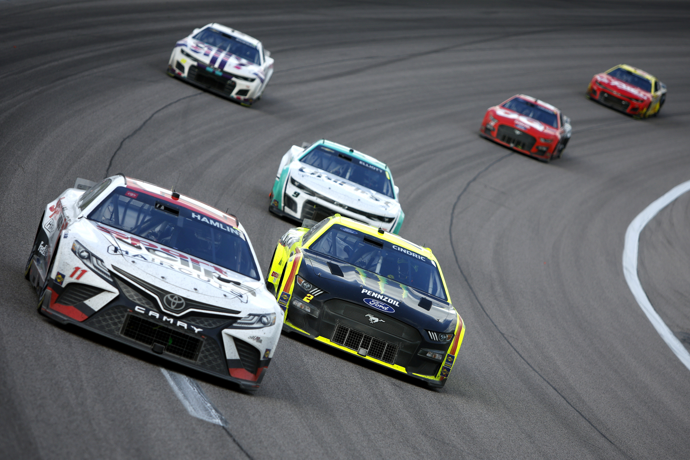

NASCAR
Mis on NASCAR?
NASCAR (National Association for Stock Car Auto Racing, LLC) on 1948. aastal asutatud USA motospordiorganisatsioon, mis korraldab võidusõidusarju USA-s, Kanadas, Mehhikos ja Euroopas.
Kuulsaim võidusõidusari on NASCAR Cup Series (NCS), mis on saanud sünonüümseks ,,NASCAR''-iga.
NCS
Hooaeg koosneb 36 võidusõidust, mida peetakse enamasti ovaalsetel radadel ringe (~150-400 ringi) sõites.
Keskmine distants on umbes 640 km, mille sõitmine võtab vaid paar tundi.
Pikim sõit on 970 km, millele kulub üle viie tunni.
Keskmised kiirused jäävad olenevalt rajast 150 km/h ja 300 km/h vahele.
Ühele autole kulub hooaja vältel 10-20 miljonit USD.
